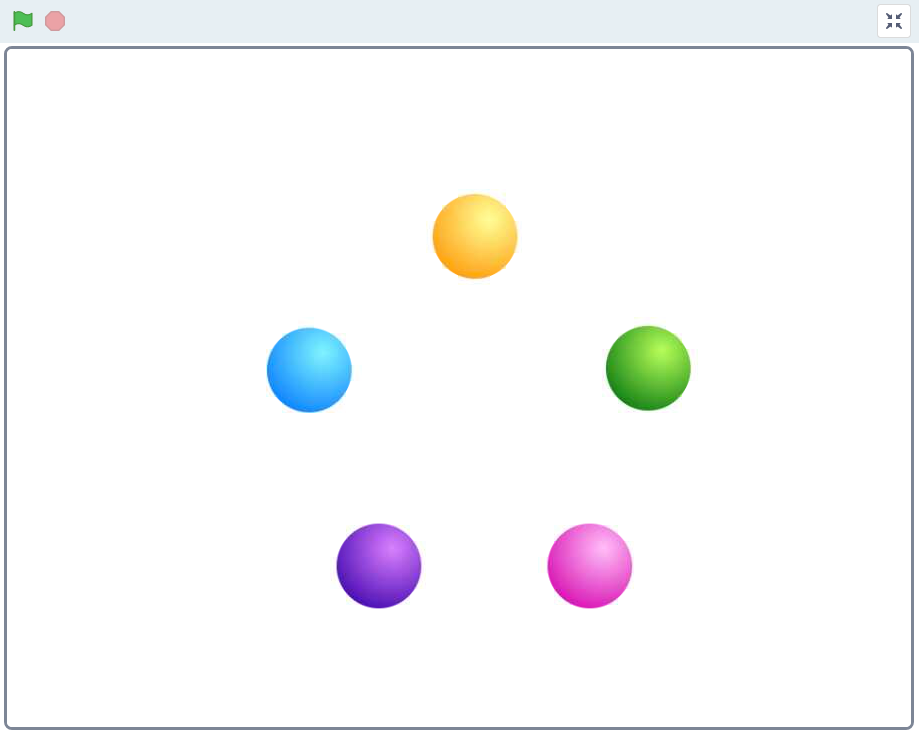

Note
Bonjour et bienvenue dans la communauté SunFounder dédiée aux passionnés de Raspberry Pi, Arduino et ESP32 sur Facebook ! Plongez plus profondément dans l’univers du Raspberry Pi, Arduino et ESP32 avec d’autres passionnés.
Pourquoi nous rejoindre ?
Support d’experts : Résolvez les problèmes post-vente et surmontez les défis techniques grâce à l’aide de notre communauté et de notre équipe.
Apprendre & Partager : Échangez des conseils et des tutoriels pour améliorer vos compétences.
Aperçus exclusifs : Bénéficiez d’un accès anticipé aux annonces de nouveaux produits et aux présentations en avant-première.
Réductions spéciales : Profitez de réductions exclusives sur nos produits les plus récents.
Promotions festives et cadeaux : Participez à des concours et à des promotions spéciales lors des fêtes.
👉 Prêt à explorer et créer avec nous ? Cliquez sur [Ici] et rejoignez-nous dès aujourd’hui !
1.2 Boules Colorées
Cliquer sur différentes boules colorées dans la zone de scène allumera la LED RGB dans des couleurs variées.
Composants Requis

Construire le Circuit

Charger le Code et Voir le Résultat
Après avoir chargé le fichier de code (1.2_colorful_balls.sb3) dans Scratch 3, la LED RGB s’allumera en jaune, bleu, rouge, vert ou violet lorsque vous cliquerez sur la boule correspondante.
Conseils pour les Sprites
Supprimez le sprite par défaut, puis choisissez le sprite Ball.

Dupliquez-le 5 fois.

Choisissez différents costumes pour ces 5 sprites Ball et placez-les aux emplacements correspondants.

Conseils pour le Code
Avant de comprendre le code, nous devons nous familiariser avec le RGB color model.
Le modèle de couleur RVB est un modèle additif dans lequel la lumière rouge, verte et bleue est combinée de diverses manières pour reproduire une large gamme de couleurs.
Mélange des couleurs additives : en ajoutant du rouge au vert, on obtient du jaune ; en ajoutant du vert au bleu, on obtient du cyan ; en ajoutant du bleu au rouge, on obtient du magenta ; en combinant les trois couleurs primaires, on obtient du blanc.

Une LED RVB est une combinaison de 3 LED (rouge, verte et bleue) réunies dans un seul boîtier. Vous pouvez produire presque toutes les couleurs en combinant ces trois couleurs.
Elle possède 4 broches : l’une est GND (masse), et les 3 autres contrôlent respectivement les 3 LED.
Ainsi, le code permettant d’allumer la LED RVB en jaune est le suivant.

Lorsque le sprite Ball (boule jaune) est cliqué, nous définissons gpio17 sur haut (LED rouge allumée), gpio18 sur haut (LED verte allumée) et gpio27 sur bas (LED bleue éteinte), ce qui fait que la LED RVB s’allume en jaune.
Vous pouvez écrire des codes pour les autres sprites de la même manière pour que les LED RVB s’allument dans les couleurs correspondantes.